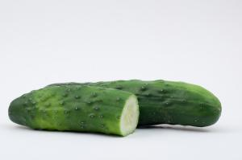

{kind=link}
{kind=link}
{kind=link}
{kind=link}
{kind=link}
{kind=link}
{kind=link}
{kind=link}
{kind=link}
{kind=link}
{kind=link}
{kind=link}
General Information and Agronomic Aspects
Cucumber is a member of the Cucurbitaceae family, which includes pumpkins, squash, gourds and zucchini. Cucumber is grown for the immature fruits, which are eaten fresh (slicing cucumber), or used for pickles (pickling cucumber) . The slicing cucumbers are peeled, sliced and served with vinegar or dressing, or as an ingredient of salads. The large, yellow, round types are boiled and eaten as an ingredient of stews. Pickling cucumbers are preserved or marinated with vinegar, salt, or spices. They can also be used fresh. Cucumbers are a good source of vitamin C.
Nutritive Value per 100 g of edible Portion
| Raw or Cooked Cucumber | Food Energy (Calories / %Daily Value*) | Carbohydrates (g / %DV) | Fat (g / %DV) | Protein (g / %DV) | Calcium (g / %DV) | Phosphorus (mg / %DV) | Iron (mg / %DV) | Potassium (mg / %DV) | Vitamin A (I.U) | Vitamin C (I.U) | Vitamin B 6 (I.U) | Vitamin B 12 (I.U) | Thiamine (mg / %DV) | Riboflavin (mg / %DV) | Ash (g / %DV) |
| Cucumber with Peel raw | 15.0 / 1% | 3.6 / 1% | 0.1 / 0% | 0.7 / 1% | 16.0 / 2% | 34.0 / 2% | 0.3 / 2% | 147 / 4% | 105 IU / 2% | 2.8 / 5% | 0.0 / 2% | 0.0 / 0% | 0.0 / 0% | 0.0 / 2% | 0.4 |
*Percent Daily Values (DV) are based on a 2000 calorie diet. Your daily values may be higher or lower, depending on your calorie needs.
Climatic conditions, soil and water management
Cucumber requires a warm climate. The optimum temperature for growth is about 30degC and the optimum night temperature 18-21degC. In the tropics, elevations up to 1700 m appear to be suitable for cucumber cultivation. A lot of light tends to increase the number of staminate (male) flowers. Cucumbers need a fair amount of water but they cannot stand waterlogging. High relative humidity encourages downy mildew. The soil should preferably be fertile and well-drained, with a pH of 6.5-7.5. Long and medium long slicing cucumber varieties are grown in greenhouses where climate and other growing conditions can be controlled.
Propagation and planting
Cucumber is propagated by seed. Soil preparation requires generous incorporation of well rotted manure. About 30 t/ha or 15 tons/ha should be applied inside the planting holes together with a spoonful of rock phosphate (3 tea spoons) for each planting hole. Sowing is done directly in the field with several seeds per hill, 90-120 cm apart, then thinned to 2-3 plants per hill, or seeds are sown in nursery beds and seedlings transplanted to the field at the 2-true-leaf stage at 30-40 cm within and 1-2 m between the rows. Sowing rates per ha are about 2.5-3 kg for direct seeding and 1 kg when transplanted. Cucumber cultivated for pickles is planted closer, up to 250,000 plants/ha. For greenhouse varieties plants are started in individual pots and transplanted to permanent position when they have 2-3 permanent leaves.
Cucumber varieties are categorised into four types on basis of fruit length:
- Long cucumbers: Fruit length over 30 cm. Examples: "Berlin RZ", "Bologna RZ", "Cumlande RZ", "Myrthos RZ", "Pluto RZ" "Virginia RZ")
- Midi cucumbers: Fruit length between 18 -24 cm Examples: "Media RZ
- "Mini cucumbers: Fruit length between 15 -19 cm. Examples: "Khassib RZ", "Gianco RZ
- "Cocktail cucumbers: Less than 15 cm. Examples: "Rania RZ"
Other varieties include:
- "Ashley" It takes about 65 days to maturity. Fruit colour is dark green. Fruit shape is long and spined. It has some resistance to downy mildew.
- "Danora F1 Hybrid". It is a long cucumber. It tales about 65 days to maturity. Fruit colour is green. Fruit is elongated. It has good resistance to powdery mildew and leaf spot.
- "Palomar". It takes about about 60 days to maturity. Fruit is dark green. Fruit is long and cylindrical. It has good tolerance to leaf diseases. It is good for pickling.
- "Poinsett". Poinsett is a variety with a very high yield potential, good disease and heat resistance
- ."Sarig". It is dark green in colour. Fruit length of 14-16 cm. It is very smooth and of high quality. It has a long shelf life. It is resistant to powdery mildew. It is suitable for green house production.
- "Super Marketer". Maturity period is 45 to 60 days. It grows well in hot climatic conditions. Its very high yielding about 16-32 t/ha. It is very popular in the local market.
- "Tempo" ("HA 78"). It is dark green in colour. The average fruit length is 30-35 cm. It has a good shelf life of up to 2 weeks. It is resistant to powdery mildew.
- "Toaz". It has a very vigorous growth. Fruit is dark green in colour. Fruit length is 16-18 cm. It is smooth and has a good shelf life, It is suitable for green house production.
- "Long Fellow"
- "Hybrid Victory"
- "Kande" (new variety produced in Tanzania)
Because varieties change all the time, please ask your local seed company to give information about the available varieties.
|  |
| Cucumber |
| (c) Biovision |
Marketable cucumbers: The two long varieties shown on the left are green house types that need protected environment and careful staking so as not to damage fruits. The two short types on the right can be grown in open fields and without staking. Pickling varieties are even smaller, but also baby fruits of the two field varieties are good for pickling.
Husbandry
Weed control is necessary until the plants cover the soil entirely. Support (stakes) should be provided for some cultivars, and the tip of the main stem can be nipped off to encourage branching. Irrigate at frequent intervals, and maintain a high level of soil moisture throughout the growing period. Lateral shoots can be pruned after the first fruits have formed to limit leaf and flower production. Greenhouse varieties are staked according to preferred practices, usually by means of twisting the growing stem around a string attached to an overhead strong wire. There are indications that irrigation water containing applications of effective micro-organisms (EM) can prevent damping off and early attacks of diseases on leaves.
Irrigation should preferably be applied in the form of drip in order to prevent water splashes and spread of diseases. Staked cucumbers are very susceptible to wind, so if grown in open land should be carefully protected from wind.
Harvesting
Cucumbers for fresh consumption are harvested before they are fully mature, usually starting about 50- 60 days after planting, and thereafter every few days. For pickling, immature fruits of several stages are harvested. Only for seed production are cucumbers allowed to mature on the plant.
Cucumbers should be handled with care as they get damaged easily during transport. Depending on variety one plant may yield up to 10 fruits, and total yields with good plant care can easily reach 50 tons/ ha of the larger fruit types. More common yields are 25-30 tonnes/ha. Fruits should not be left to ripen on the vines as the plants will cease to bear. The marketed fruit must be firm, green and the size typical of the cultivar.
Some of the long slicing cultivars of cucumber are packed individually before marketing and cooled.